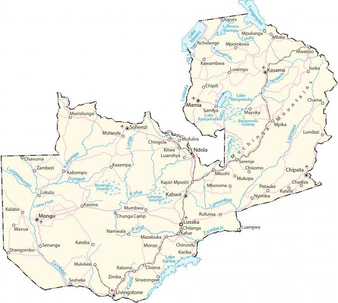

Zambia is located in the divide between Central and Eastern Africa. The country is known for its dramatic landscapes, safaris, big five wildlife reserves, and the world’s largest waterfall, Victoria Falls. The country’s name is derived from the Zambezi River, which forms its southern boundary.
Zambia borders the Democratic Republic of the Congo to the north, Tanzania to the northeast, Malawi to the east, Mozambique to the southeast, Zimbabwe and Botswana to the south, Namibia to the southwest, and Angola to the west. Lusaka is the capital and largest city of Zambia. Other major cities are Kitwe, Ndola, and Kabwe.
Go back home